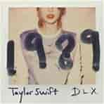
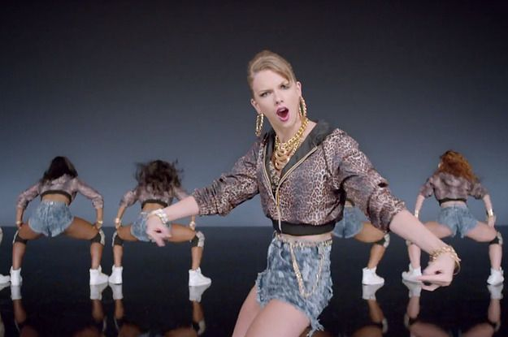
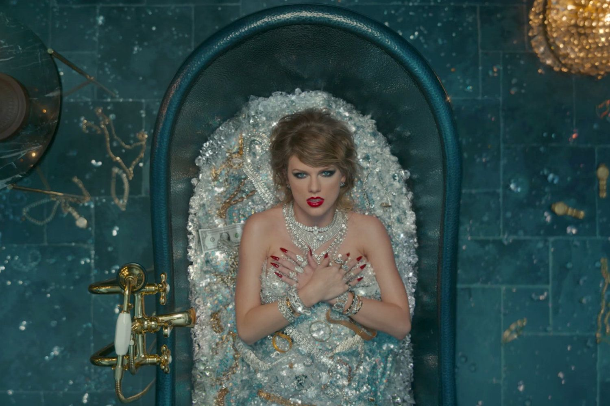
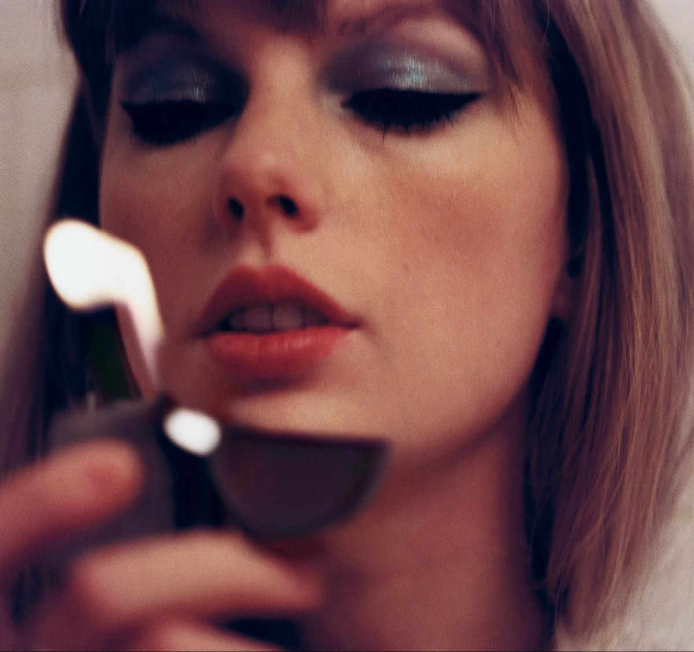

Taylor Swift
MÚSICAS
Don't Blame Me
Figura 1. Capa do álbum Reputation
Bad Blood

Figura 2. Capa do álbum 1989
Shake It Off

Figura 3. Frame do videolipe de Shake It Off
Look What You Made Me Do

Figura 4. Frame do videoclipe
You Belong With Me
Figura 5. Capa do Álbum Fearless (Taylor's Version)
Karma

Figura 6. Capa do álbum Midnights
this is me trying
Figura 7. Capa do álbum Folklore